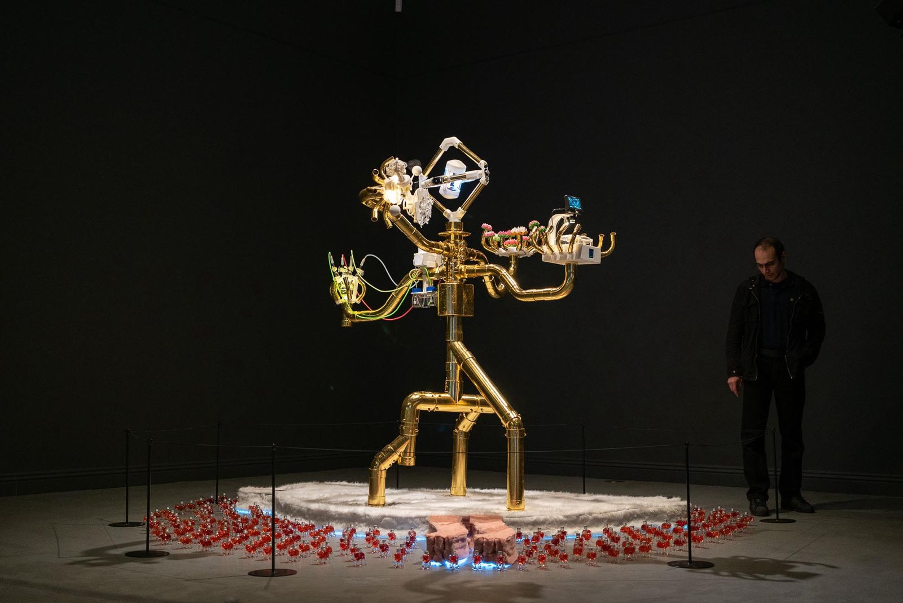
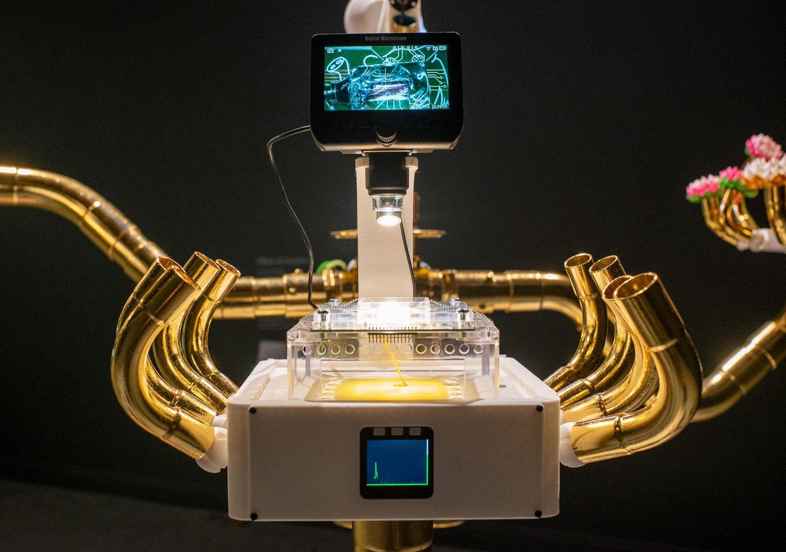

Pillars of Creation is a sculpture by Henry Tan and collaborators for Emergence: Art from Life at the Japanese American Cultural & Community Center in Los Angeles, part of PST ART. The work reimagines the four-armed Brahma of the Erawan Shrine in Bangkok as a cyborg figure. Each hand holds a scientific object standing for knowledge (a DNA printer prototype), cosmic energy (a brain organoid incubator), time (a tourbillon dementia clock) and sacrifice (cultivated microorganisms).
Artists: Henry Tan, Masato Takemura, Pakchira Chartpanyawut, Weeratouch Pongruengkiat, Woraporn Pongsamart, Dr. Pat Pataranutaporn, Jirapat Thaweechuen, Tanis Phongpisantham, Pongsakorn Wechakarn, Sumeth Klomchitcharoen, Kookpedz Studio. Technical collaboration (3D-printed holding mechanism, snap-on finger system, microscope system): Weeratouch Pongruengkiat. Curated by Fathomers. Photography: Carson Davis Brown.
